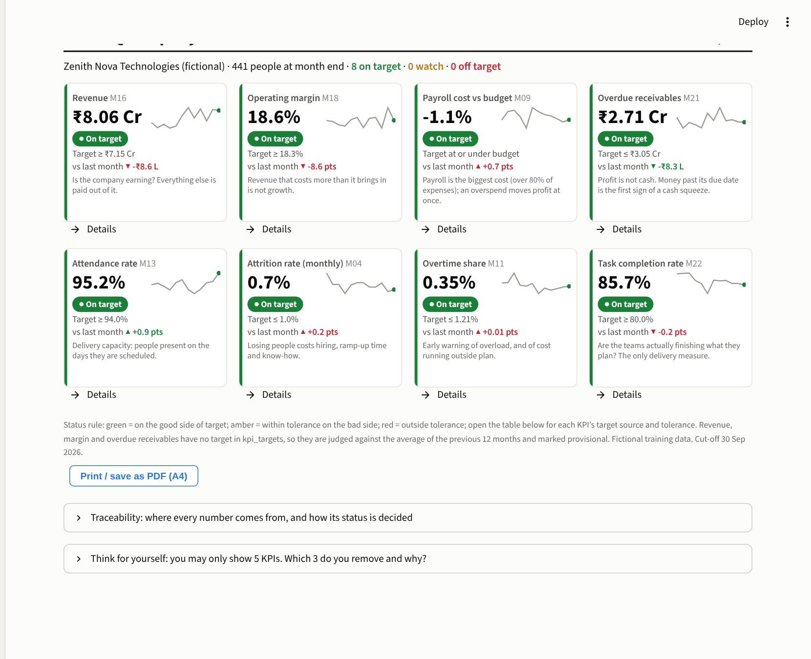
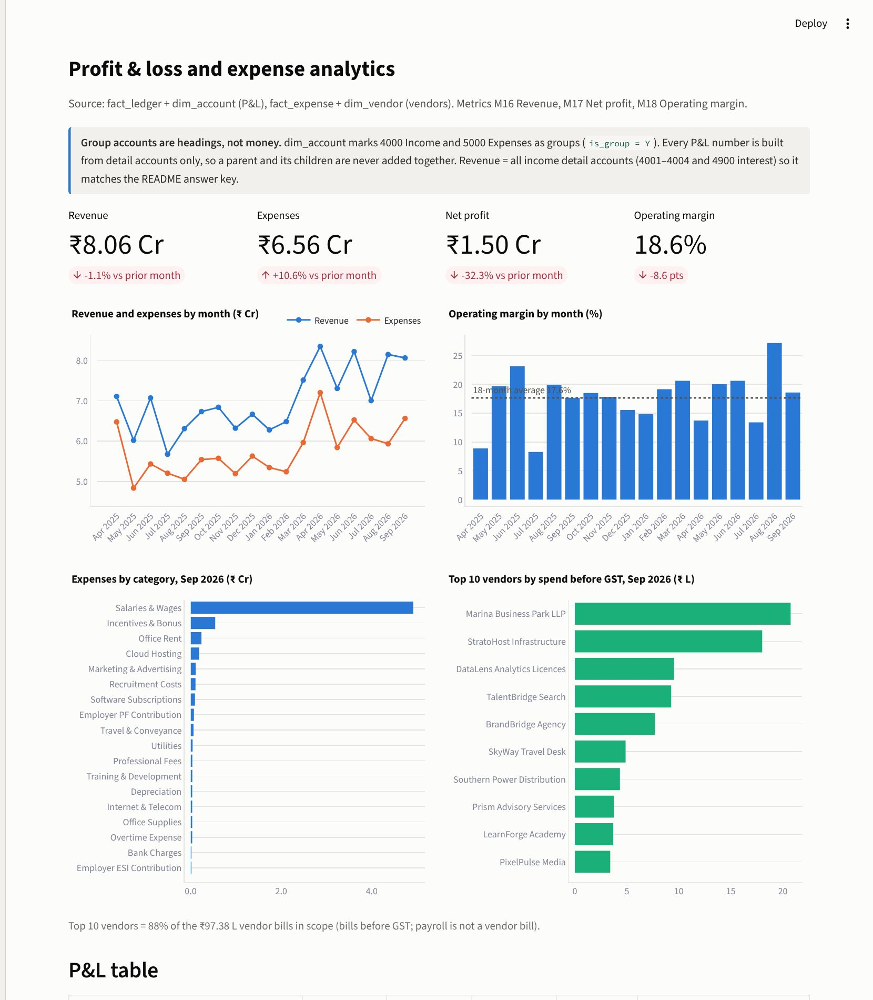
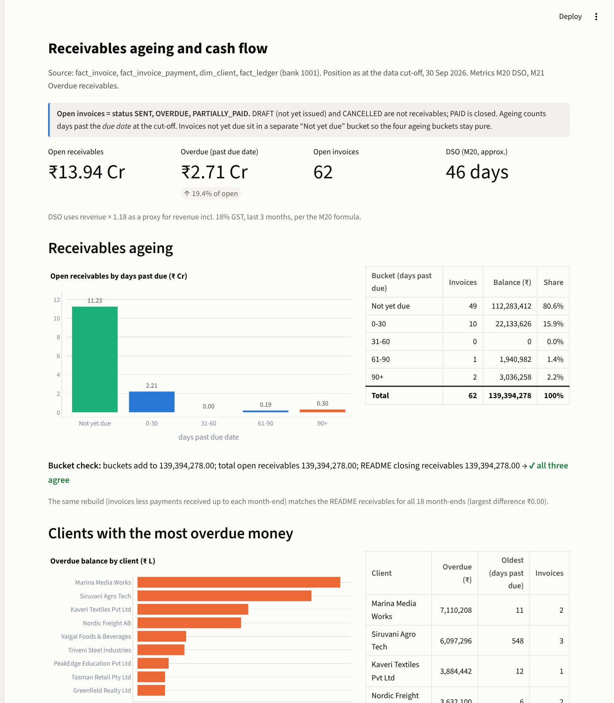
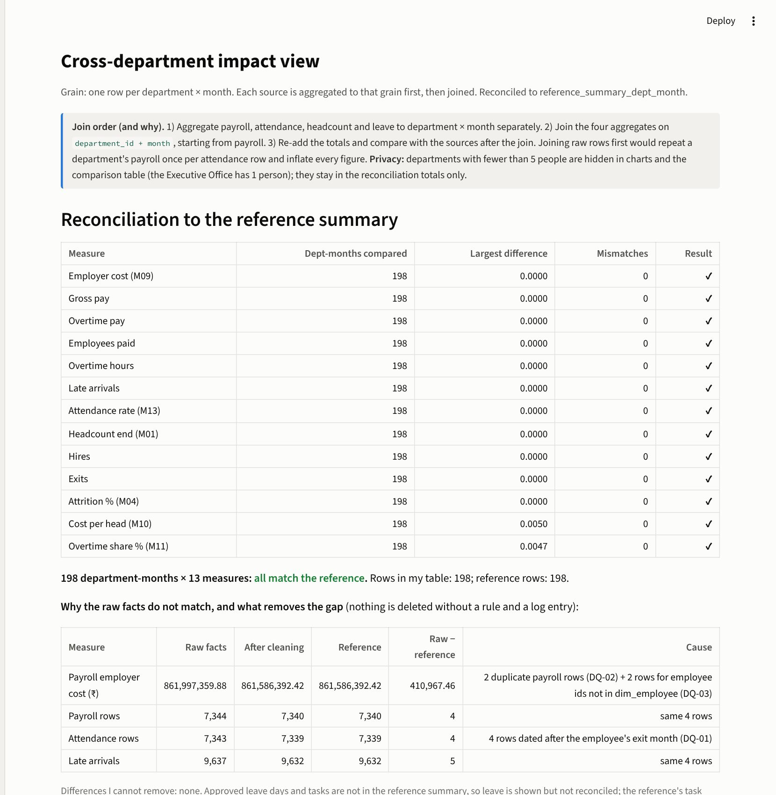
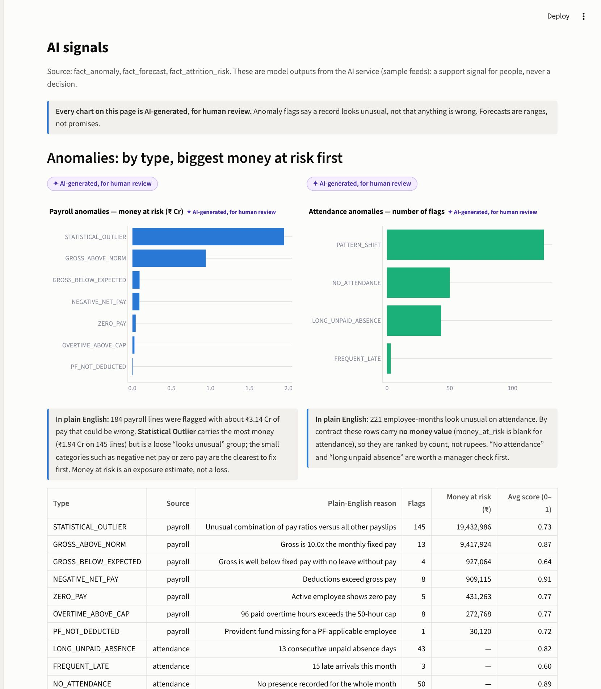

Name: Aali Harshad Track: Data Analytics Phase: 3 (Tasks 11–15) Git tag: phase-3
Repository: https://github.com/AALIHARSHAD/PluselQ_Phase3_Project
| Task | Done | Evidence |
|---|---|---|
| 11 Profit & loss, expense analytics | Yes | Page “Profit & loss” (Fig. 2). Group accounts excluded. Tie-out: 17 of 18 months equal the README to the paisa; Jun 2026 differs by ₹18,450 = planted DQ-04, explained on the page. |
| 12 Receivables and cash | Yes | Page “Receivables & cash” (Fig. 3). Buckets 22,133,626 + 3,036,258 + 1,940,982 + 112,283,412 = 139,394,278 = open receivables = README. Open statuses written on page. |
| 13 Cross-department view | Yes | Page “Department impact” (Fig. 4). 198 department-months × 13 measures match reference_summary_dept_month, 0 mismatches; raw-vs-clean gap explained (DQ-01/02/03). |
| 14 AI signals | Yes | Page “AI signals” (Fig. 5). Every chart labelled “AI-generated, for human review”; anomalies ranked by money at risk; forecast error table from back-test. |
| 15 Executive scorecard | Yes | Page “Company health scorecard” (Fig. 1) and task15_scorecard_A4.pdf (one A4 page). 8 KPIs, each from view v_company_month, each with a Details link. |
$ PYTHONPATH=src python -m pytest -q 23 passed, 1 skipped (17 of them new in tests/test_phase3.py)
| Check | Mine | README / reference | Result |
|---|---|---|---|
| Revenue, 18 months | 1,260,930,052 | 1,260,930,052 | ✔ ties |
| Net profit, 18 months | 224,665,137.58 | 224,683,587.58 | Δ 18,450 = DQ-04 (Jun 2026), explained |
| Open receivables (30 Sep 2026) | 139,394,278 | 139,394,278 | ✔ ties |
| Bank balance, all 18 month-ends | rebuilt from ledger, max difference ₹0.00 | ✔ | |
| Department × month table | 198 rows | 198 rows | ✔ 0 mismatches |
| My re-run of AI forecast method vs stored Oct 2026 | 426.28 | 426.3 | ✔ reproduces |
Forecast error (company headcount, my back-test): MAPE 3.6% at 1 month ahead rising to 6.3% at 6 months; a naive “same as last month” guess is better at every horizon (1.3% → 5.8%); the 80% band caught the actual only 30–41% of the time, so it is too narrow. No stored forecast month has an actual yet (data ends where the forecast starts), so this is my back-test, not the AI team’s own error.
[Rewrite in your own words before submitting] Group accounts are headings and must never be added to their children. Profit is not cash: this company is profitable and still has ₹2.71 Cr overdue. Aggregate every source to the same grain first and join after, then re-add the totals. AI numbers need a range, an error figure and a label, and a simple baseline can beat the model. A scorecard needs a written rule for every colour.
| Jun 2026 profit did not tie | Found ₹18,450 on one journal entry (JE-002094). Left in, flagged as DQ-04 instead of deleting to force a match. |
| Forecast has no actuals to test against | Re-ran the documented method from earlier months (back-test) and said so on the page. |
AI page crashed (.flags column clashed with a pandas attribute) | Renamed to n_flags; page now runs; tests added. |
| kpi_targets has no thresholds, and no target for revenue, margin, overdue | Wrote the amber/red rule in docs/decisions.md; those three use the previous-12-month average and are marked provisional. To confirm with finance. |
| Scorecard printed on 2 pages | Print CSS removes sidebar and spacing; verified 1 A4 page. |
Package with Docker (docker compose up phase3 already works), tag and release, add self-service filters, and keep the tie-out tests running in CI.




